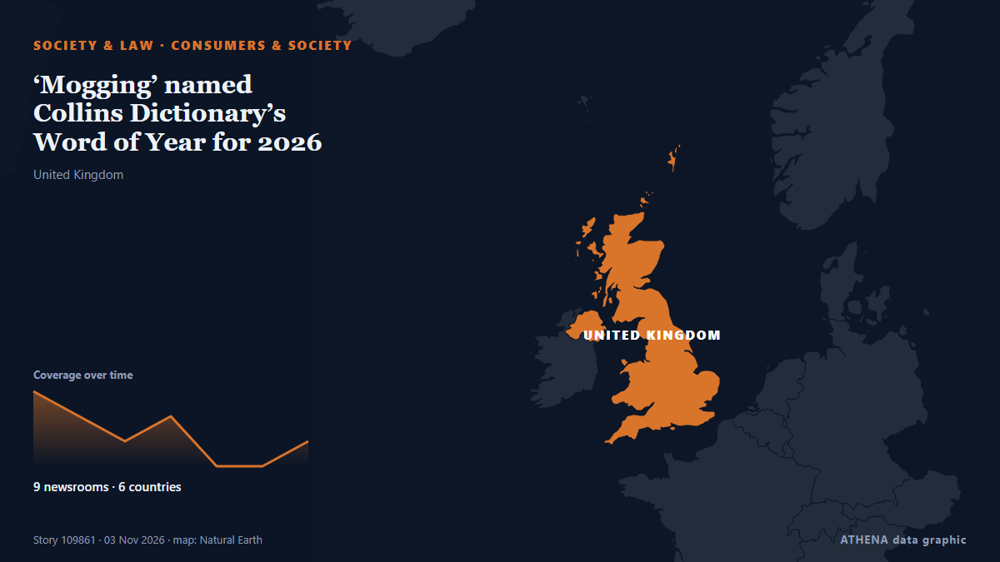

Καταναλωτές & κοινωνία
ΧορηγούμενοΠαρουσιάζεται από  Cybernetics and Artificial Intelligence Lab Welcome to the Cybernetics and Artificial Intelligence Laboratory, established at the Department of Business Administration of the National and Kapodistrian University of Athens. The lab is headed by Professor Dimitrios Thomakos. The lab aims to do research that can be published in top venues. Our research uses tools and methods of Artificial Intelligence, and lies in the following areas: - Forecasting - Decision making - Cyber security - Finance We are always looking forward to collaborating with exceptional students!
Cybernetics and Artificial Intelligence Lab Welcome to the Cybernetics and Artificial Intelligence Laboratory, established at the Department of Business Administration of the National and Kapodistrian University of Athens. The lab is headed by Professor Dimitrios Thomakos. The lab aims to do research that can be published in top venues. Our research uses tools and methods of Artificial Intelligence, and lies in the following areas: - Forecasting - Decision making - Cyber security - Finance We are always looking forward to collaborating with exceptional students!
| 21 Οκτ | 0 |
|---|---|
| 22 Οκτ | 0 |
| 23 Οκτ | 0 |
| 24 Οκτ | 0 |
| 25 Οκτ | 0 |
| 26 Οκτ | 0 |
| 27 Οκτ | 0 |
| 28 Οκτ | 0 |
| 29 Οκτ | 0 |
| 30 Οκτ | 2 |
| 31 Οκτ | 2 |
| 1 Νοε | 3 |
| 2 Νοε | 12 |
| 3 Νοε | 2 |
Οι τίτλοι των ειδήσεων παρουσιάζονται στα αγγλικά, όπως δημοσιεύτηκαν.

‘Mogging’ named Collins Dictionary’s Word of Year for 2026
Slang term refers to outshining or outperforming someone or something. από Anadolu Agency (English)
Retail prices decreased by up to 12 per cent in October
Price decreases of five to 12 per cent were observed in 35 products recorded by the consumer association in October, it announced on Monday. από Cyprus Mail
At ‘China’s Hollywood’, Visitors Become Stars as Consumers Spend More on Experiences
Since the experience launched in August, Hengdian World Studios said more than 2,000 people had taken part, with bookings full on most days. από CNA (Channel NewsAsia)
Boots No7 shoppers race to buy luxury £165 beauty advent calendar for £40
The beauty advent calendar features eight full-sized products. από Manchester Evening News
Lee again stresses fairness amid backlash over multicultural family remarks
President Lee Jae Myung on Tuesday stressed fairness in government support programs amid growing criticism over his recent remarks questioning preferential benefits for multicultural families in some… από Korea Herald
PayU study: Romanians plan to spend around 7% more on Black Friday in 2026
Romanians are preparing for Black Friday with larger budgets and are increasingly turning to high-value purchases, according to the latest study carried out by PayU Romania, the country’s leading… από Business Review (Romania)
Snap settles social media addiction lawsuit to avoid trial
Snap CEO Evan Spiegel was due to testify in the upcoming trial. από Engadget
Snap settles US social media trial days after Meta
The case was to be the latest in a series of trials whose outcomes are expected to guide the resolution of hundreds of similar lawsuits across the US. από Free Malaysia Today
67% of Greeks Plan to Shop on Black Friday 2026
Two-thirds of Greek consumers intend to shop during Black Friday and Cyber Monday, with most budgeting between €100 and €500. από to vima
Zakir Naik gets schooled by Malala's father for defending Taliban on girls' education
Zakir Naik, booked under India's stringent UAPA for terror-linked activities, said: "Everything that comes in the media is not true. από Times of India
Martha Stewart says she ‘really screwed up’ with homeless Halloween costume
Stewart appeared dressed as a homeless person, holding a sign that read "I AM HUNGRY HELP ME!!" In the post's caption, she promoted her candle collection. από RNZ National
‘Give Regina breathing space,’ Ned Nwoko tells bloggers
Senator Ned Nwoko has appealed to the public, particularly fans and friends of his estranged wife, Nollywood actress Regina Daniels, to give her space to recover, warning that those spreading false… από Vanguard
What Australian kids are teaching their parents about tech
Public debates about kids and media often focus on harm. από Phys.org
Sanjay Gupta’s wife defends ‘grieving’ daughter for showing middle finger to paparazzi
Anuradha Lekhi Gupta has paid tribute to her husband, filmmaker Sanjay Gupta, in a social media post following his death last week at the age of 57. από Gulf News
Mweetwa dismisses speculations of why he is not in new cabinet
Choma Central Member of Parliament, Cornelius Mweetwa has dismissed social media speculation that his exclusion from the new Cabinet and that of other former ministers is due to political… από Lusaka Times
China's "porcelain capital" wins Global Award for Sustainable Development in Cities
Addis Ababa, October 31, 2026 (FMC) – Addis Ababa has won the 2026 Shanghai Award, an international recognition presented by UN-Habitat and China in connection with World Cities Day, in recognition… από Fana Broadcasting Corporate